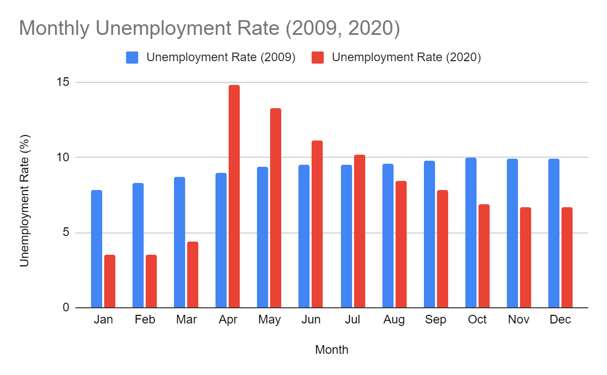

Effects on Adults
The impact of COVID-19 on the mental health of working adults has been drastic. Many have struggled to maintain their relationships, finances, and mental wellbeing during the outbreak.
Unemployment has been found to be a major contributor to psychological issues in adults. According to a survey that investigated the relationship between mental health and job loss during the pandemic, “Respondents who lost a job after March 1, 2020 (vs those who did not) reported more than twice the number of mentally unhealthy days. Females and those lacking social support had significantly worse physical and mental health outcomes. Participants in the lowest, pre-pandemic household income groups reported experiencing worse mental health”, (Guerin, 2021). A significant number of workers have experienced termination of employment due to the pandemic, likely causing the levels of financial stress and anxiety to skyrocket. Data collected by the Bureau of Labour Statistics has shown that the unemployment rate, which measures the percentage of individuals in the labor force who are currently unemployed, far exceeded that of the 2009 economic recession. The unemployment rate has gradually declined over time, but it is still higher than it was pre-pandemic.

COVID-19 has had an unfathomably negative impact on parents. In addition to the aforementioned economic issues, parents have had to manage their children during the workday in the wake of school closures. According to a study of parental anxiety amidst the outbreak, “Due to the rise of quarantine and social distancing requirements, responsibilities of parents multiplied as they were suddenly required to manage both household- and work-related responsibilities concurrently in a single environment, and such sudden blending of environments is stress-inducing. To this point, parents reported experiences of higher stress levels if they were working during the pandemic, which may best be explained by the need to juggle multiple roles, such as being a caregiver, educator, and employee, simultaneously” (Frankel, 2021). The lack of childcare during the pandemic has disproportionately affected mothers. The Department of Labor found that, “About 1.6 million fewer mothers of children under 18 were working in January 2021 than in January 2020, representing a 6.5% decline. In comparison, the number of working fathers declined by 1.3 million, or 5.1%. Not only were fewer moms working, but many employed moms scaled back on working hours to a larger extent than fathers” (5 Facts on Moms, Work, and COVID-19).